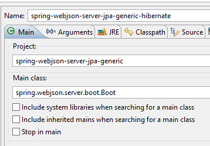
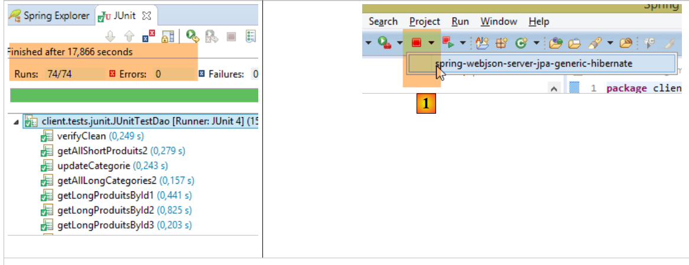
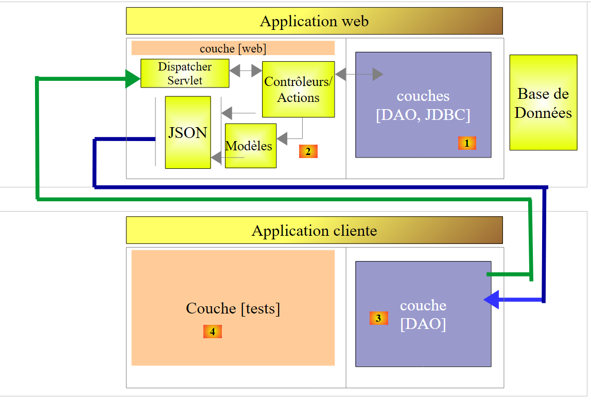
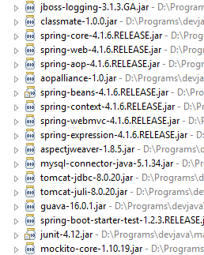
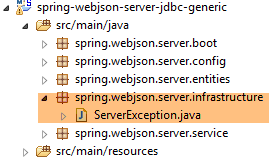
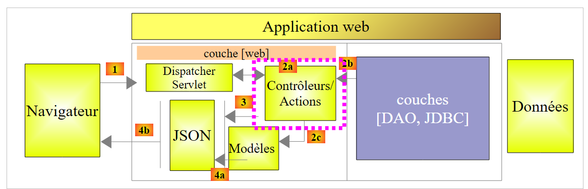
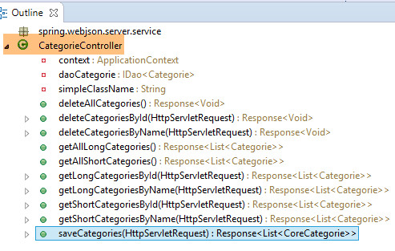
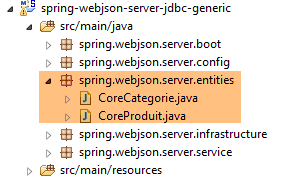
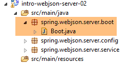
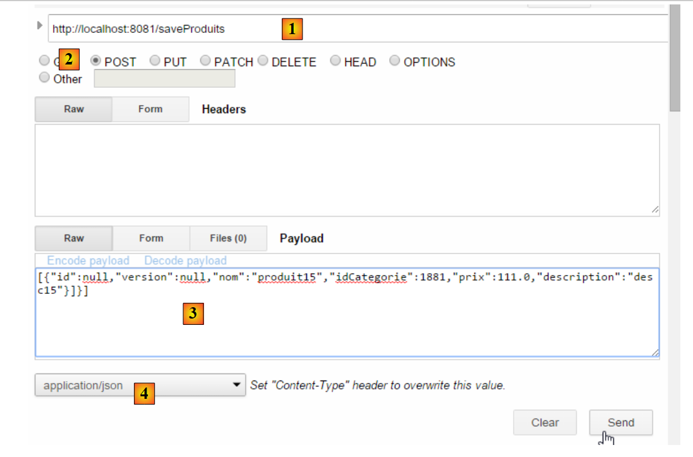

17. Exposer une base de données sur le web
17.1. Architecture du service web / jSON
Nous allons mettre en place l'architecture suivante :
 |
- en [1], les couches [DAO, [JPA], JDBC]sont implémentées par l'une des 24 configurations présentées dans les chapitres précédents et notamment au paragraphe 15 ;
- la couche [DAO] [3] du client distant implémente la même interface que la couche [DAO] [1], ce qui nous permet d'utiliser la même couche de tests que dans les chapitres précédents. Tout se passe comme si les couches [2-3] étaient transparentes pour la couche [4] ;
Nous allons nous appuyer sur les projets suivants :
- le projet [sgbd-config-jdbc] qui configure la couche JDBC de l'un des six SGBD ;
- le projet [sgbd-config-jpa-*] qui configure la couche JPA du SGBD choisi pour l'une des trois implémentations JPA étudiées (Hibernate, EclipseLink, OpenJpa) ;
- le projet générique [spring-jdbc-04] qui implémente la couche [DAO] [1] ;
- le projet générique [spring-jpa-generic] qui implémente la couche [DAO] [2] ;
- le projet générique [spring-webjson-server-jdbc-generic] qui implémente un service web s'appuyant sur le projet [spring-jdbc-04] ;
- le projet générique [spring-webjson-server-jpa-generic] qui implémente un service web s'appuyant sur le projet [spring-jpa-generic] ;
- le client générique [spring-webjson-client-generic] qui sera le client unique des 24 configurations du service web ;
17.2. Mise en place de l'environnement de travail
Nous allons travailler avec les éléments suivants :
- SGBD MySQL 5.6.25 ;
- implémentation JPA Hibernate ;
Importez les projets suivants dans STS :
 |
- les projets [spring-webjson-*] seront trouvés dans le dossier [<exemples>\spring-database-generic\spring-webjson] ;
- faire [Alt-F5] puis régénérer l'ensemble des projets ci-dessus ;
Pour vérifier la bonne installation de l'environnement de travail, procédez ainsi :
- lancez le service web avec la configuration d'exécution [spring-webjson-server-jpa-generic-hibernate] qui s'appuie sur une implémentation JPA / Hibernate ;
 |  |
puis :
- lancez le client de ce service web avec la configuration d'exécution [spring-webjson-client-generic] qui est un test JUnit :
 |  |
Le test doit réussir :
 |
- en [1], arrêtez le service web puis lancez le service web avec la configuration d'exécution [spring-webjson-server-jdbc-generic] qui s'appuie sur une implémentation JDBC :
 |  |
puis lancez le client de ce service web avec la configuration d'exécution [spring-webjson-client-generic] :
| |
Le test doit réussir :
 |
17.3. Implémentation du service web / jSON / JDBC
Nous nous intéressons tout d'abord à l'architecture suivante :
 |
où la couche [DAO] [1] communique directement avec la couche JDBC du SGBD.
17.3.1. Le projet Eclipse du service web
Le projet Eclipse du service web / jSON / JDBC est le suivant :
 |
C'est un projet Maven dont le fichier [pom.xml] est le suivant :
<project xmlns="http://maven.apache.org/POM/4.0.0" xmlns:xsi="http://www.w3.org/2001/XMLSchema-instance"
xsi:schemaLocation="http://maven.apache.org/POM/4.0.0 http://maven.apache.org/xsd/maven-4.0.0.xsd">
<modelVersion>4.0.0</modelVersion>
<groupId>dvp.spring.database</groupId>
<artifactId>spring-webjson-server-jdbc-generic</artifactId>
<version>0.0.1-SNAPSHOT</version>
<name>spring-webjson-server-jdbc-generic</name>
<description>démo spring mvc</description>
<parent>
<groupId>org.springframework.boot</groupId>
<artifactId>spring-boot-starter-parent</artifactId>
<version>1.2.3.RELEASE</version>
</parent>
<dependencies>
<!-- couche web -->
<dependency>
<groupId>org.springframework.boot</groupId>
<artifactId>spring-boot-starter-web</artifactId>
</dependency>
<!-- couche [DAO] -->
<dependency>
<groupId>dvp.spring.database</groupId>
<artifactId>spring-jdbc-generic-04</artifactId>
<version>0.0.1-SNAPSHOT</version>
</dependency>
</dependencies>
<!-- plugins -->
<build>
<plugins>
<plugin>
<groupId>org.apache.maven.plugins</groupId>
<artifactId>maven-surefire-plugin</artifactId>
<version>2.18.1</version>
</plugin>
</plugins>
</build>
</project>
- lignes 11-15 : le projet Maven parent ;
- lignes 24-28 : la dépendance sur la couche [DAO / JDBC] implémentée par le projet [spring-jdbc-generic-04] ;
- lignes 19-22 : la dépendance sur l'artifact [spring-boot-starter-web]. Cet artifact amène avec lui toutes les dépendances nécessaires à la création d'un service web / jSON. Il amène aussi des bibliothèques inutiles. Une configuration plus précise serait donc nécessaire, mais cette configuration est pratique pour démarrer.
Les dépendances amenées par cette configuration sont les suivantes :
 |  | 1  |
- en [1], on voit qu'Eclipse a vu la dépendance sur l'archive du projet [spring-jdbc-generic-04] ;
Les dépendances ci-dessus sont à la fois celles de la couche [DAO] et de la couche [web].
17.3.2. Configuration de la couche [web]
La couche [web] est configurée par deux fichiers de configuration Spring :
 |
17.3.2.1. La classe [WebConfig]
La classe [WebConfig] a pour rôle principal de configurer :
- le serveur Tomcat sur lequel va être déployé le service web ;
- les filtres jSON de sérialisation / désérialisation des objets [Produit] et [Categorie] :
package spring.webjson.server.config;
import java.util.List;
import org.springframework.beans.factory.annotation.Autowired;
import org.springframework.beans.factory.config.ConfigurableBeanFactory;
import org.springframework.boot.context.embedded.EmbeddedServletContainerFactory;
import org.springframework.boot.context.embedded.ServletRegistrationBean;
import org.springframework.boot.context.embedded.tomcat.TomcatEmbeddedServletContainerFactory;
import org.springframework.context.ApplicationContext;
import org.springframework.context.annotation.Bean;
import org.springframework.context.annotation.Configuration;
import org.springframework.context.annotation.Scope;
import org.springframework.http.converter.HttpMessageConverter;
import org.springframework.http.converter.json.MappingJackson2HttpMessageConverter;
import org.springframework.web.context.WebApplicationContext;
import org.springframework.web.servlet.DispatcherServlet;
import org.springframework.web.servlet.config.annotation.EnableWebMvc;
import org.springframework.web.servlet.config.annotation.WebMvcConfigurerAdapter;
import com.fasterxml.jackson.databind.ObjectMapper;
import com.fasterxml.jackson.databind.ser.impl.SimpleBeanPropertyFilter;
import com.fasterxml.jackson.databind.ser.impl.SimpleFilterProvider;
@Configuration
@EnableWebMvc
public class WebConfig extends WebMvcConfigurerAdapter {
// -------------------------------- configuration couche [web]
@Autowired
private ApplicationContext context;
@Bean
public DispatcherServlet dispatcherServlet() {
DispatcherServlet servlet=new DispatcherServlet((WebApplicationContext) context);
return servlet;
}
@Bean
public ServletRegistrationBean servletRegistrationBean(DispatcherServlet dispatcherServlet) {
return new ServletRegistrationBean(dispatcherServlet, "/*");
}
@Bean
public EmbeddedServletContainerFactory embeddedServletContainerFactory() {
return new TomcatEmbeddedServletContainerFactory("", 8081);
}
// -------------------------------- configuration filtres [json]
...
}
- ligne 25 : la classe est une classe de configuration Spring ;
- ligne 26 : l'annotation [@EnableWebMvc] indique que la couche web est implémentée avec Spring MVC. Cela va provoquer des configurations implicites que nous n'aurons pas à faire ;
- lignes 30-31 : injection du contexte Spring de l'application ;
- lignes 33-37 : définition du bean [dispatcherServlet] qui, dans les applications Spring MVC, joue le rôle de [FrontController] dont le rôle est d'aiguiller les requêtes des clients vers le contrôleur capable de les traiter ;
- lignes 39-42 : la servlet du service web est enregistrée ainsi que les URL qu'elle traite. Ici on a écrit [/*] qui signifie toutes les URLs ;
- lignes 44-47 : définition du bean [embeddedServletContainerFactory] qui définit le serveur web à utiliser. Ici ce sera le serveur web Tomcat [http://tomcat.apache.org/]. On peut utiliser également le serveur Jetty [http://www.eclipse.org/jetty/]. Ce sont tous les deux des serveurs embarqués dans les dépendances Maven. Lorsque [Spring Boot] pilote le lancement du projet, il lance automatiquement le serveur web désigné dans la configuration et déploie dessus le service ou l'application web ;
La configuration des filtres jSON se fait de la façon suivante :
package spring.webjson.server.config;
import java.util.List;
...
@Configuration
@EnableWebMvc
public class WebConfig extends WebMvcConfigurerAdapter {
// -------------------------------- configuration couche [web]
...
// -------------------------------- configuration filtres [json]
// mapping jSON
@Bean
public MappingJackson2HttpMessageConverter mappingJackson2HttpMessageConverter() {
final MappingJackson2HttpMessageConverter converter = new MappingJackson2HttpMessageConverter();
final ObjectMapper objectMapper = new ObjectMapper();
converter.setObjectMapper(objectMapper);
return converter;
}
@Override
public void configureMessageConverters(List<HttpMessageConverter<?>> converters) {
converters.add(mappingJackson2HttpMessageConverter());
super.configureMessageConverters(converters);
}
// filtres jSON
@Bean
public ObjectMapper jsonMapper(MappingJackson2HttpMessageConverter mappingJackson2HttpMessageConverter) {
return mappingJackson2HttpMessageConverter.getObjectMapper();
}
@Bean
@Scope(value = ConfigurableBeanFactory.SCOPE_PROTOTYPE)
ObjectMapper jsonMapperShortCategorie(MappingJackson2HttpMessageConverter mappingJackson2HttpMessageConverter) {
ObjectMapper jsonMapper = jsonMapper(mappingJackson2HttpMessageConverter);
jsonMapper.setFilters(new SimpleFilterProvider().addFilter("jsonFilterCategorie",
SimpleBeanPropertyFilter.serializeAllExcept("produits")));
return jsonMapper;
}
@Bean
@Scope(value = ConfigurableBeanFactory.SCOPE_PROTOTYPE)
ObjectMapper jsonMapperLongCategorie(MappingJackson2HttpMessageConverter mappingJackson2HttpMessageConverter) {
ObjectMapper jsonMapper = jsonMapper(mappingJackson2HttpMessageConverter);
jsonMapper.setFilters(new SimpleFilterProvider().addFilter("jsonFilterCategorie",
SimpleBeanPropertyFilter.serializeAllExcept()).addFilter("jsonFilterProduit",
SimpleBeanPropertyFilter.serializeAllExcept("categorie")));
return jsonMapper;
}
@Bean
@Scope(value = ConfigurableBeanFactory.SCOPE_PROTOTYPE)
ObjectMapper jsonMapperShortProduit(MappingJackson2HttpMessageConverter mappingJackson2HttpMessageConverter) {
ObjectMapper jsonMapper = jsonMapper(mappingJackson2HttpMessageConverter);
jsonMapper.setFilters(new SimpleFilterProvider().addFilter("jsonFilterProduit",
SimpleBeanPropertyFilter.serializeAllExcept("categorie")));
return jsonMapper;
}
@Bean
@Scope(value = ConfigurableBeanFactory.SCOPE_PROTOTYPE)
ObjectMapper jsonMapperLongProduit(MappingJackson2HttpMessageConverter mappingJackson2HttpMessageConverter) {
ObjectMapper jsonMapper = jsonMapper(mappingJackson2HttpMessageConverter);
jsonMapper.setFilters(new SimpleFilterProvider().addFilter("jsonFilterProduit",
SimpleBeanPropertyFilter.serializeAllExcept()).addFilter("jsonFilterCategorie",
SimpleBeanPropertyFilter.serializeAllExcept("produits")));
return jsonMapper;
}
}
- ligne 8 : la classe [WebConfig] étend la classe [WebMvcConfigurerAdapter]. Cette dernière classe configure l'application web avec des valeurs par défaut. Lorsqu'on veut personnaliser cette configuration, il faut redéfinir certaines méthodes de cette classe. Ici, nous voulons redéfinir la méthode [configureMessageConverters] des lignes [22-26] (notez l'annotation @Override) qui définit une liste de 'convertisseurs'. Le service web / jSON et son client échangent des lignes de texte. Un convertisseur est un outil capable de créer un objet à partir d'une ligne de texte reçue (désérialisation) et de créer une ligne de texte à partir d'un objet (sérialisation). Ici, les lignes de texte seront des chaînes jSON. On parlera donc de sérialisation /désérialisation jSON ;
- ligne 23 : la méthode [configureMessageConverters] reçoit comme paramètre une liste de convertisseurs ;
- lignes 24-25 : le convertisseur jSON [MappingJackson2HttpMessageConverter] des lignes [14-20] est ajouté à cette liste. Cela va permettre les échanges jSON entre le client et le serveur ;
- lignes [14-20] : définissent un convertisseur jSON implémenté par la classe [MappingJackson2HttpMessageConverter]. Cette classe (ligne 10) sera trouvée dans les dépendances Maven du projet ;
- lignes [17-18] : un mappeur jSON est créé et affecté au convertisseur [MappingJackson2HttpMessageConverter] ;
- lignes [29-32] : définissent le mappeur jSON créé ligne 17 comme un bean Spring. Cela le met dans le contexte Spring et le rend disponible pour être injecté dans d'autres beans ou être utilisé dans le code de l'application web ;
- lignes 34-41 : définissent un filtre jSON pour le mappeur jSON précédent ;
- ligne 35 : l'annotation [@Scope(value = ConfigurableBeanFactory.SCOPE_PROTOTYPE)] fait que le bean défini ici n'est pas un singleton. A chaque fois qu'il sera demandé au contexte, la méthode [jsonMapperCategorieWithoutProduits] sera réexécutée. Cela est nécessaire ici car nous définissons quatre filtres jSON. Or un seul doit être actif à un moment donné. En donnant au bean la portée [ConfigurableBeanFactory.SCOPE_PROTOTYPE], on est assuré que la méthode sera réexécutée et que le préccédent filtre sera remplacé par le nouveau ;
- pour comprendre ces filtres, il faut se rappeler que dans la couche [DAO] :
- l'entité [Produit] a été décorée avec l'annotation [jsonFilterProduit] ;
- l'entité [Categorie] a été décorée avec l'annotation [jsonFilterCategorie] ;
Il faut donc définir des filtres portant ces noms.
- lignes [34-41] : définissent un filtre appelé [jsonMapperShortCategorie] qui permet d'avoir la représentation jSON d'une catégorie sans ses produits ;
- lignes [43-51] : définissent un filtre appelé [jsonMapperLongCategorie] qui permet d'avoir la représentation jSON d'une catégorie avec ses produits ;
- lignes [53-60] : définissent un filtre appelé [jsonMapperShortProduit] qui permet d'avoir la représentation jSON d'un produit sans sa catégorie ;
- lignes [62-70] : définissent un filtre appelé [jsonMapperLongProduit] qui permet d'avoir la représentation jSON d'un produit avec sa catégorie ;
17.3.2.2. La classe [AppConfig]
La classe [AppConfig] configure l'ensemble de l'application, ç-à-d les couches [web] et [DAO] :
package spring.webjson.server.config;
import org.springframework.context.annotation.ComponentScan;
import org.springframework.context.annotation.Configuration;
import org.springframework.context.annotation.Import;
@Configuration
@ComponentScan(basePackages = { "spring.webjson.server.service" })
@Import({ spring.jdbc.config.AppConfig.class, WebConfig.class })
public class AppConfig {
}
- ligne 7 : la classe est une classe de configuration Spring ;
- ligne 9 : on importe les beans de la couche [DAO / JDBC] ainsi que ceux définis par la classe [WebConfig]. Tous les beans de la couche [DAO] seront donc disponibles dans l'application web / jSON ;
- ligne 8 : indique dans quels packages trouver d'autres beans Spring ;
17.3.3. L'exception [ServerException]
 |
De même que dans les chapitres précédents, la couche [DAO] lançait une exception non contrôlée [DaoException], la couche [web] lancera une exception non contrôlée [ServerException] :
package spring.webjson.server.infrastructure;
import generic.jdbc.infrastructure.UncheckedException;
public class ServerException extends UncheckedException {
private static final long serialVersionUID = 1L;
// constructeurs
public ServerException() {
super();
}
public ServerException(int code, Throwable e, String simpleClassName) {
super(code, e, simpleClassName);
}
}
- ligne 5 : la classe [ServerException] étend la classe [UncheckedException] définie dans le projet configurant la couche JDBC (ligne 3) ;
17.3.4. Les contrôleurs
 |
 |
Nous aurons ici deux contrôleurs :
- [CategorieController] contrôlera les requêtes sur les catégories ;
- [CategorieController] contrôlera les requêtes sur les produits ;
Les URL exposées par les contrôleurs correspondent une à une aux méthodes des interfaces [DaoCategorie] et [DaoProduit] de la couche [DAO] :
 |  |
Ainsi ci-dessus :
- la méthode web [deleteAllCategories] fera appel à la méthode [deleteAllEntities] de la classe [DaoCategorie] ;
- la méthode web [getShortCategoriesById] fera appel à la méthode [getShortEntitiesById] de la classe [DaoCategorie] ;
Il en est de même pour les produits :
 |  |
17.3.4.1. Les URL exposées par le contrôleur [CategorieController]
| |
| |
| |
| |
| |
| |
| |
| |
| |
| |
17.3.4.2. Les URL exposées par le contrôleur [ProduitController]
| |
| |
| |
| |
| |
| |
| |
| |
| |
| |
17.3.5. Implémentation générique du service web
 |
La liste des URL exposées par le service web montre qu'on offre les mêmes types d'URL pour gérer les catégories et les produits. Plutôt que d'écrire deux contrôleurs très semblables, on va les faire dériver d'une classe qui fera tout le travail commun aux deux contrôleurs. Ce sera la classe [AbstractController] ci-dessus. Cette classe implémentera l'interface [Iws] suivante :
package spring.webjson.server.service;
import java.util.List;
import javax.servlet.http.HttpServletRequest;
import spring.jdbc.entities.AbstractCoreEntity;
public interface Iws<T extends AbstractCoreEntity> {
// liste de tous les entités T
public Response<List<T>> getAllShortEntities();
public Response<List<T>> getAllLongEntities();
// des entités particulières - version courte
public Response<List<T>> getShortEntitiesById(HttpServletRequest request);
public Response<List<T>> getShortEntitiesByName(HttpServletRequest request);
// des entités particulières - version longue
public Response<List<T>> getLongEntitiesById(HttpServletRequest request);
public Response<List<T>> getLongEntitiesByName(HttpServletRequest request);
// mise à jour de plusieurs entités
public Response<List<T>> saveEntities(HttpServletRequest request);
// suppression de toutes les entités
public Response<Void> deleteAllEntities();
// suppression de plusieurs entités
public Response<Void> deleteEntitiesById(HttpServletRequest request);
public Response<Void> deleteEntitiesByName(HttpServletRequest request);
}
Cette interface reprend les méthodes de l'interface de la couche [DAO] qui va être exploitée :
package spring.jdbc.dao;
import java.util.List;
import spring.jdbc.entities.AbstractCoreEntity;
public interface IDao<T extends AbstractCoreEntity> {
// liste de tous les entités T
public List<T> getAllShortEntities();
public List<T> getAllLongEntities();
// des entités particulières - version courte
public List<T> getShortEntitiesById(Iterable<Long> ids);
public List<T> getShortEntitiesById(Long... ids);
public List<T> getShortEntitiesByName(Iterable<String> names);
public List<T> getShortEntitiesByName(String... names);
// des entités particulières - version longue
public List<T> getLongEntitiesById(Iterable<Long> ids);
public List<T> getLongEntitiesById(Long... ids);
public List<T> getLongEntitiesByName(Iterable<String> names);
public List<T> getLongEntitiesByName(String... names);
// mise à jour de plusieurs entités
public List<T> saveEntities(Iterable<T> entities);
public List<T> saveEntities(@SuppressWarnings("unchecked") T... entities);
// suppression de toutes les entités
public void deleteAllEntities();
// suppression de plusieurs entités
public void deleteEntitiesById(Iterable<Long> ids);
public void deleteEntitiesById(Long... ids);
public void deleteEntitiesByName(Iterable<String> names);
public void deleteEntitiesByName(String... names);
public void deleteEntitiesByEntity(Iterable<T> entities);
public void deleteEntitiesByEntity(@SuppressWarnings("unchecked") T... entities);
}
Le passage de l'interface [IDao<T>] de la couche [DAO] à l'interface [Iws<T>] du service web a obéi aux règles suivantes :
- les méthodes de l'interface [Iws<T>] ne vont pas lancer d'exception. Si exception il y a, elle sera encapsulée dans l'objet [Response] ;
- les variantes des paramètres telles que lignes 45 et 47 [Iterable<String> names, String... names] disparaissent. Les méthodes obtiennent leurs paramètres dans la requête HTTP du client de type [HttpServletRequest request] ;
Toutes les réponses du service web seront encapsulées dans l'objet [Response] suivant :
 |
package spring.webjson.server.service;
public class Response<T> {
// ----------------- propriétés
// statut de l'opération
private int status;
// un message d'erreur
private String exception;
// le corps de la réponse
private T body;
// constructeurs
public Response() {
}
public Response(int status, String exception, T body) {
this.status = status;
this.exception = exception;
this.body = body;
}
// getters et setters
...
}
- ligne 4 : la réponse encapsule un type T ;
- ligne 12 : la réponse de type T ;
- lignes 7-10 : il est possible qu'une méthode rencontre une exception. Dans ce cas, elle rendra une réponse avec :
- ligne 8 : status!=0 ;
- ligne 10 : un message d'erreur ;
La classe [AbstractController] est la suivante :
package spring.webjson.server.service;
import java.util.List;
import javax.annotation.PostConstruct;
import javax.servlet.http.HttpServletRequest;
import org.springframework.beans.factory.annotation.Autowired;
import org.springframework.context.ApplicationContext;
import spring.jdbc.dao.IDao;
import spring.jdbc.entities.AbstractCoreEntity;
import spring.jdbc.infrastructure.DaoException;
import spring.webjson.server.infrastructure.ServerException;
import com.fasterxml.jackson.core.type.TypeReference;
import com.fasterxml.jackson.databind.ObjectMapper;
import com.google.common.io.CharStreams;
public abstract class AbstractController<T extends AbstractCoreEntity> implements Iws<T> {
@Autowired
protected ApplicationContext context;
// couche DAO
private IDao<T> dao;
abstract protected IDao<T> getDao();
// local
private String simpleClassName = getClass().getSimpleName();
@PostConstruct
public void init(){
dao=getDao();
}
@Override
public Response<List<T>> getAllShortEntities() {
try {
// réponse
return new Response<List<T>>(0, null, dao.getAllShortEntities());
} catch (DaoException e) {
return new Response<List<T>>(1, e.toString(), null);
} catch (Exception e) {
return new Response<List<T>>(2, new ServerException(1007, e, simpleClassName).toString(), null);
}
}
@Override
public Response<List<T>> getAllLongEntities() {
try {
// réponse
return new Response<List<T>>(0, null, dao.getAllLongEntities());
} catch (DaoException e) {
return new Response<List<T>>(1, e.toString(), null);
} catch (Exception e) {
return new Response<List<T>>(2, new ServerException(1008, e, simpleClassName).toString(), null);
}
}
@Override
public Response<List<T>> getShortEntitiesById(HttpServletRequest request) {
...
}
@Override
public Response<List<T>> getShortEntitiesByName(HttpServletRequest request) {
...
}
@Override
public Response<List<T>> getLongEntitiesById(HttpServletRequest request) {
...
}
@Override
public Response<List<T>> getLongEntitiesByName(HttpServletRequest request) {
...
}
@Override
public Response<List<T>> saveEntities(HttpServletRequest request) {
return new Response<List<T>>(2, new ServerException(1013, new RuntimeException("[saveEntities] not implemented"), simpleClassName).toString(), null);
}
@Override
public Response<Void> deleteAllEntities() {
try {
// on supprime
dao.deleteAllEntities();
// réponse
return new Response<Void>(0, null, null);
} catch (DaoException e) {
return new Response<Void>(1, e.toString(), null);
} catch (Exception e) {
return new Response<Void>(2, new ServerException(1014, e, simpleClassName).toString(), null);
}
}
@Override
public Response<Void> deleteEntitiesById(HttpServletRequest request) {
...
}
@Override
public Response<Void> deleteEntitiesByName(HttpServletRequest request) {
...
}
}
Les méthodes sont toutes implémentées de la même façon :
- si elles attendent des informations, elles les récupèrent dans l'objet [HttpServletRequest request] ;
- elles appellent la méthode de la couche [DAO] qui porte le même nom qu'elles ;
- elles gèrent les exceptions qui peuvent se produire, soit dans l'opération 1 de récupération des paramètres, soit dans l'opération 2 d'appel à la couche [DAO] ;
Examinons d'abord comment est injectée la couche [DAO] dans la classe [AbstractController] :
public abstract class AbstractController<T extends AbstractCoreEntity> implements Iws<T> {
@Autowired
protected ApplicationContext context;
// couche DAO
private IDao<T> dao;
abstract protected IDao<T> getDao();
@PostConstruct
public void init(){
dao=getDao();
}
- ligne 1 : la classe est abstraite et implémente l'interface générique [Iws<T>] ;
- lignes 3-4 : injection du contexte Spring ;
- ligne 7 : la référence encore inconnue de la couche [DAO] à utiliser ;
- ligne 9 : la méthode abstraite [getDao] qui va rendre la référence de la couche [DAO] à utiliser. Cette méthode va être redéfinie par la classe fille et c'est donc la classe fille qui va indiquer quelle couche [DAO] utiliser (DaoProduit ou DaoCategorie) ;
- ligne 11 : l'annotation [@PostConstruct] annote une méthode à exécuter lorsque l'instanciation de l'objet est terminée. Lorsque cette instanciation est terminée, les injections Spring ont été faites. La classe fille aura alors obtenu la référence de sa couche [DAO] et pourra donc la transmettre à son parent ;
La méthode [getShortEntitiesById] est la suivante :
@Override
public Response<List<T>> getShortEntitiesById(HttpServletRequest request) {
try {
// on récupère la valeur postée
String body = CharStreams.toString(request.getReader());
// on la désérialise
ObjectMapper mapper = context.getBean("jsonMapper", ObjectMapper.class);
List<Long> ids = mapper.readValue(body, new TypeReference<List<Long>>() {
});
// réponse
return new Response<List<T>>(0, null, dao.getShortEntitiesById(ids));
} catch (DaoException e) {
return new Response<List<T>>(1, e.toString(), null);
} catch (Exception e) {
return new Response<List<T>>(2, new ServerException(1009, e, simpleClassName).toString(), null);
}
}
- ligne 5 : la valeur postée par le client sera une chaîne jSON. C'est ici qu'elle est récupérée ;
- lignes 7-9 : la chaîne jSON contient la liste des clés primaires des entités dont on veut la version courte ;
- ligne 11 : on appelle la méthode [DAO] de même nom. La réponse de type [List<T>] est encapsulée dans un objet [Response] ;
- ligne 13 : cas où la couche [DAO] a lancé une exception ;
- ligne 15 : cas des autres exceptions, en particulier l'exception possible à la désérialisation du paramètre jSON, ligne 8 ;
La méthode [getShortEntitiesByName] est analogue :
@Override
public Response<List<T>> getShortEntitiesByName(HttpServletRequest request) {
try {
// on récupère la valeur postée
String body = CharStreams.toString(request.getReader());
// on la désérialise
ObjectMapper mapper = context.getBean("jsonMapper", ObjectMapper.class);
List<String> noms = mapper.readValue(body, new TypeReference<List<String>>() {
});
// réponse
return new Response<List<T>>(0, null, dao.getShortEntitiesByName(noms));
} catch (DaoException e) {
return new Response<List<T>>(1, e.toString(), null);
} catch (Exception e) {
return new Response<List<T>>(2, new ServerException(1010, e, simpleClassName).toString(), null);
}
}
- lignes 4-9 : ici le paramètre jSON est la liste des noms des catégories dont on veut la version courte ;
La méthode [saveEntities] n'a pas été implémentée parce qu'elle assez dépendante de la nature de l'entité à persister, [Categorie] ou [Produit]. Il y a peu de code à factoriser. Ce travail est donc laissé aux classes fille.
@Override
public Response<List<T>> saveEntities(HttpServletRequest request) {
return new Response<List<T>>(2, new ServerException(1013, new RuntimeException("[saveEntities] not implemented"), simpleClassName).toString(), null);
}
17.3.6. Le contrôleur [CategorieController]
 |
Le contrôleur [CategorieController] gère le traitement des URL concernant les catégories :
package spring.webjson.server.service;
import java.util.ArrayList;
import java.util.List;
import javax.servlet.http.HttpServletRequest;
import org.springframework.beans.factory.annotation.Autowired;
import org.springframework.web.bind.annotation.RequestMapping;
import org.springframework.web.bind.annotation.RequestMethod;
import org.springframework.web.bind.annotation.RestController;
import spring.jdbc.dao.IDao;
import spring.jdbc.entities.Categorie;
import spring.jdbc.entities.Produit;
import spring.jdbc.infrastructure.DaoException;
import spring.webjson.server.entities.CoreCategorie;
import spring.webjson.server.entities.CoreProduit;
import spring.webjson.server.infrastructure.ServerException;
import com.fasterxml.jackson.core.type.TypeReference;
import com.fasterxml.jackson.databind.ObjectMapper;
import com.google.common.io.CharStreams;
@RestController
public class CategorieController extends AbstractController<Categorie> {
@Autowired
private IDao<Categorie> daoCategorie;
@Override
protected IDao<Categorie> getDao() {
return daoCategorie;
}
// local
private String simpleClassName = getClass().getSimpleName();
@RequestMapping(value = "/getAllShortCategories", method = RequestMethod.GET)
public Response<List<Categorie>> getAllShortCategories() {
// parent
Response<List<Categorie>> response = super.getAllShortEntities();
// filtres de sérialisation jSON
context.getBean("jsonMapperShortCategorie", ObjectMapper.class);
// réponse
return response;
}
@RequestMapping(value = "/getAllLongCategories", method = RequestMethod.GET)
public Response<List<Categorie>> getAllLongCategories() {
// parent
Response<List<Categorie>> response = super.getAllLongEntities();
// filtres de sérialisation jSON
context.getBean("jsonMapperLongCategorie", ObjectMapper.class);
// réponse
return response;
}
@RequestMapping(value = "/getShortCategoriesById", method = RequestMethod.POST)
public Response<List<Categorie>> getShortCategoriesById(HttpServletRequest request) {
// parent
Response<List<Categorie>> response = super.getShortEntitiesById(request);
// filtres de sérialisation jSON
context.getBean("jsonMapperShortCategorie", ObjectMapper.class);
// réponse
return response;
}
@RequestMapping(value = "/getShortCategoriesByName", method = RequestMethod.POST)
public Response<List<Categorie>> getShortCategoriesByName(HttpServletRequest request) {
// parent
Response<List<Categorie>> response = super.getShortEntitiesByName(request);
// filtres de sérialisation jSON
context.getBean("jsonMapperShortCategorie", ObjectMapper.class);
// réponse
return response;
}
@RequestMapping(value = "/getLongCategoriesById", method = RequestMethod.POST)
public Response<List<Categorie>> getLongCategoriesById(HttpServletRequest request) {
// parent
Response<List<Categorie>> response = super.getLongEntitiesById(request);
// filtres de sérialisation jSON
context.getBean("jsonMapperLongCategorie", ObjectMapper.class);
// réponse
return response;
}
@RequestMapping(value = "/getLongCategoriesByName", method = RequestMethod.POST)
public Response<List<Categorie>> getLongCategoriesByName(HttpServletRequest request) {
// parent
Response<List<Categorie>> response = super.getLongEntitiesByName(request);
// filtres de sérialisation jSON
context.getBean("jsonMapperLongCategorie", ObjectMapper.class);
// réponse
return response;
}
@RequestMapping(value = "/saveCategories", method = RequestMethod.POST, consumes = "application/json; charset=UTF-8")
public Response<List<CoreCategorie>> saveCategories(HttpServletRequest request) {
...
}
@RequestMapping(value = "/deleteAllCategories", method = RequestMethod.GET)
public Response<Void> deleteAllCategories() {
return super.deleteAllEntities();
}
@RequestMapping(value = "/deleteCategoriesById", method = RequestMethod.POST, consumes = "application/json; charset=UTF-8")
public Response<Void> deleteCategoriesById(HttpServletRequest request) {
return super.deleteEntitiesById(request);
}
@RequestMapping(value = "/deleteCategoriesByName", method = RequestMethod.POST, consumes = "application/json; charset=UTF-8")
public Response<Void> deleteCategoriesByName(HttpServletRequest request) {
return super.deleteEntitiesByName(request);
}
}
- ligne 26 : la classe [CategorieController] étend la classe [AbstractController] ;
- ligne 25 : l'annotation [@RestController] fait de la classe un composant Spring. Cette annotation indique de plus que la classe est un service web dont les méthodes envoient directement leur réponse au client au format jSON ;
- lignes 28-29 : la référence de la couche [DAO] est injectée ici ;
- lignes 31-34 : redéfinition de la méthode [getDao] délarée abstraite dans la classe parent et dont le but est de rendre une référence sur la couche [DAO] à utiliser ;
Les méthodes sont toutes bâties sur le même modèle :
- délégation du traitement à la classe parent ;
- initialisation du mappeur jSON qui va procéder à la sérialisation de la réponse ;
- envoi de la réponse ;
Intéressons-nous à la signature de quelques URL :
| - l'URL [/getAllShortCategories] est appelée avec un GET |
| - l'URL [/getShortCategoriesById] est appelée avec un POST. La valeur postée est la chaîne jSON des clés primaires des catégories désirées ; |
| - l'URL [/getLongCategoriesByName] est appelée avec un POST. La valeur postée est la chaîne jSON des noms des catégories désirées ; |
Maintenant, détaillons la méthode [saveCategories] qui ne suit pas le format des autres méthodes :
@RequestMapping(value = "/saveCategories", method = RequestMethod.POST, consumes = "application/json; charset=UTF-8")
public Response<List<CoreCategorie>> saveCategories(HttpServletRequest request) {
// on persiste les catégories
try {
// on récupère la valeur postée
String body = CharStreams.toString(request.getReader());
// on la désérialise
ObjectMapper mapper = context.getBean("jsonMapperLongCategorie", ObjectMapper.class);
List<Categorie> categories = mapper.readValue(body, new TypeReference<List<Categorie>>() {
});
// on persiste les catégories
categories = daoCategorie.saveEntities(categories);
// on rend le résultat
List<CoreCategorie> coreCategories = new ArrayList<CoreCategorie>();
for (Categorie categorie : categories) {
CoreCategorie coreCategorie = new CoreCategorie(categorie.getId());
coreCategories.add(coreCategorie);
List<Produit> produits = categorie.getProduits();
if (produits != null) {
List<CoreProduit> coreProduits = new ArrayList<CoreProduit>();
for (Produit produit : categorie.getProduits()) {
coreProduits.add(new CoreProduit(produit.getId()));
}
coreCategorie.setCoreProduits(coreProduits);
}
}
// résultat
return new Response<List<CoreCategorie>>(0, null, coreCategories);
} catch (DaoException e) {
return new Response<List<CoreCategorie>>(1, e.toString(), null);
} catch (Exception e) {
return new Response<List<CoreCategorie>>(2, new ServerException(1020, e, simpleClassName).toString(), null);
}
}
- ligne 1 : l'URL [/saveCategories] est accompagnée d'une valeur postée. Celle-ci est la chaîne jSON des versions longues des catégories à persister ;
- lignes 5-10 : les catégories à persister sont recréées à partir de la chaîne jSON. Le lien [produit.categorie] qui relie un [Produit] à sa [Catégorie] vaut null car dans la version longue d'une [Categorie], chaque [Produit] est lui dans sa version courte sans son champ [categorie]. Cela ne gêne pas, car la couche [DAO] implémentée avec JDBC n'a pas besoin de cette information ;
- ligne 12 : les catégories sont persistées. La liste des catégories reçue a été enrichie des clés primaires des éléments persistés, catégories et produits. Rien d'autre n'a changé. Plutôt que de rendre toute la liste reçue, ce qui a un coût, on ne va rendre que les clés primaires des éléments de cette liste. Pour cela, on utilise les classes [CoreCategorie] et [CoreProduit] suivantes :
 |
package spring.webjson.server.entities;
import java.util.List;
public class CoreCategorie {
// clé primaire
private Long id;
// constructeurs
public CoreCategorie() {
}
public CoreCategorie(Long id) {
this.id=id;
}
// liste de produits
private List<CoreProduit> coreProduits;
// getters et setters
...
}
- ligne 8 : la clé primaire d'un produit ;
- ligne 20 : les clés primaires de ses produits ;
package spring.webjson.server.entities;
public class CoreProduit {
// clé primaire
private Long id;
// constructeurs
public CoreProduit() {
}
public CoreProduit(Long id) {
this.id = id;
}
// getters et setters
...
}
- ligne 6 : la clé primaire d'un produit ;
Revenons au code de la méthode [saveCategories] :
...
// on persiste les catégories
categories = daoCategorie.saveEntities(categories);
// on rend le résultat
List<CoreCategorie> coreCategories = new ArrayList<CoreCategorie>();
for (Categorie categorie : categories) {
CoreCategorie coreCategorie = new CoreCategorie(categorie.getId());
coreCategories.add(coreCategorie);
List<Produit> produits = categorie.getProduits();
if (produits != null) {
List<CoreProduit> coreProduits = new ArrayList<CoreProduit>();
for (Produit produit : categorie.getProduits()) {
coreProduits.add(new CoreProduit(produit.getId()));
}
coreCategorie.setCoreProduits(coreProduits);
}
}
// résultat
return new Response<List<CoreCategorie>>(0, null, coreCategories);
...
- lignes 5-17 : on construit la liste des [CoreCategorie] qu'on va rendre au client distant ;
- ligne 19 : la réponse est rendue et sérialisée en jSON ;
17.3.7. Gestion des filtres jSON
Pour chaque méthode d'un contrôleur, il y a deux moments pour la sérialisation / désérialisation jSON :
- la désérialisation de la valeur postée : elle est ici gérée explicitement ;
- la sérialisation du résultat : elle est ici gérée implicitement ;
Commençons par la désérialisation de la valeur postée dans [CategorieController.saveCategories] :
@RequestMapping(value = "/saveCategories", method = RequestMethod.POST, consumes = "application/json; charset=UTF-8")
public Response<List<CoreCategorie>> saveCategories(HttpServletRequest request) {
// on persiste les catégories
try {
// on récupère la valeur postée
String body = CharStreams.toString(request.getReader());
// on la désérialise
ObjectMapper mapper = context.getBean("jsonMapperLongCategorie", ObjectMapper.class);
List<Categorie> categories = mapper.readValue(body, new TypeReference<List<Categorie>>() {
});
- ligne 8 : on récupère dans le contexte Spring un mappeur configuré pour gérer le filtre jSON [jsonMapperLongCategorie]. Revenons à la définition de ce mappeur dans la classe de configuration [WebConfig] :
// -------------------------------- configuration filtres [json]
// mapping jSON
@Bean
public MappingJackson2HttpMessageConverter mappingJackson2HttpMessageConverter() {
final MappingJackson2HttpMessageConverter converter = new MappingJackson2HttpMessageConverter();
final ObjectMapper objectMapper = new ObjectMapper();
converter.setObjectMapper(objectMapper);
return converter;
}
@Override
public void configureMessageConverters(List<HttpMessageConverter<?>> converters) {
converters.add(mappingJackson2HttpMessageConverter());
super.configureMessageConverters(converters);
}
// filtres jSON
@Bean
public ObjectMapper jsonMapper(MappingJackson2HttpMessageConverter mappingJackson2HttpMessageConverter) {
return mappingJackson2HttpMessageConverter.getObjectMapper();
}
@Bean
@Scope(value = ConfigurableBeanFactory.SCOPE_PROTOTYPE)
ObjectMapper jsonMapperShortCategorie(MappingJackson2HttpMessageConverter mappingJackson2HttpMessageConverter) {
ObjectMapper jsonMapper = jsonMapper(mappingJackson2HttpMessageConverter);
jsonMapper.setFilters(new SimpleFilterProvider().addFilter("jsonFilterCategorie",
SimpleBeanPropertyFilter.serializeAllExcept("produits")));
return jsonMapper;
}
@Bean
@Scope(value = ConfigurableBeanFactory.SCOPE_PROTOTYPE)
ObjectMapper jsonMapperLongCategorie(MappingJackson2HttpMessageConverter mappingJackson2HttpMessageConverter) {
ObjectMapper jsonMapper = jsonMapper(mappingJackson2HttpMessageConverter);
jsonMapper.setFilters(new SimpleFilterProvider().addFilter("jsonFilterCategorie",
SimpleBeanPropertyFilter.serializeAllExcept()).addFilter("jsonFilterProduit",
SimpleBeanPropertyFilter.serializeAllExcept("categorie")));
return jsonMapper;
}
- lignes 32-40 : le mappeur jSON [jsonMapperLongCategorie] récupéré par la classe [CategorieController] ;
- ligne 35 : ce mappeur est rendu par la méthode [jsonMapper] des lignes 18-21 ;
- lignes 18-21 : la méthode [jsonMapper] rend le mappeur jSON du convertisseur [MappingJackson2HttpMessageConverter] des lignes 3-9 ;
Autrement dit, le mappeur jSON récupéré par la ligne 4 ci-dessous dans [CategorieController.saveCategories] :
// on récupère la valeur postée
String body = CharStreams.toString(request.getReader());
// on la désérialise
ObjectMapper mapper = context.getBean("jsonMapperLongCategorie", ObjectMapper.class);
List<Categorie> categories = mapper.readValue(body, new TypeReference<List<Categorie>>() {
});
est le convertisseur utilisé par défaut par Spring MVC pour désérialiser la valeur postée par le client et sérialiser le résultat qui lui est envoyé. Dans les lignes ci-dessus, il n'y a pas eu de désérialisation implicite de la valeur postée. Pour cela, il aurait fallu écrire :
@RequestMapping(value = "/saveCategories", method = RequestMethod.POST, consumes = "application/json; charset=UTF-8")
public Response<List<CoreCategorie>> saveCategories(@RequestBody List<Categorie> categories) {
Dans ce cas, il y aurait eu une désérialisation automatique de la valeur postée dans le paramètre [categories]. Mais il y avait le problème du filtre [jsonFilterCategorie] qu'ont les entités [Categorie]. Il faut le configurer. C'est la raison pour laquelle, nous avons choisi une désérialisation explicite (lignes 4-5). Le second point à voir est que le mappeur de la ligne 4 (qui est celui utilisé par défaut par Spring MVC) convient également pour la sérialisation du résultat [Response<List<CoreCategorie>]. En effet, l'entité [CoreCategorie] n'a pas de filtre jSON. Il n'y a donc pas lieu de configurer le mappeur jSON obtenu avec un filtre supplémentaire. Il y aura là, une sérialisation implicite de la réponse faite au client.
17.3.8. Le contrôleur [ProduitController]
 |
Le contrôleur [ProduitController] gère le traitement des URL concernant les produits. Son code est analogue à celui du contrôleur [CategorieController] :
package spring.webjson.server.service;
import java.util.ArrayList;
import java.util.List;
import javax.servlet.http.HttpServletRequest;
import org.springframework.beans.factory.annotation.Autowired;
import org.springframework.web.bind.annotation.RequestMapping;
import org.springframework.web.bind.annotation.RequestMethod;
import org.springframework.web.bind.annotation.RestController;
import spring.jdbc.dao.IDao;
import spring.jdbc.entities.Produit;
import spring.jdbc.infrastructure.DaoException;
import spring.webjson.server.entities.CoreProduit;
import spring.webjson.server.infrastructure.ServerException;
import com.fasterxml.jackson.core.type.TypeReference;
import com.fasterxml.jackson.databind.ObjectMapper;
import com.google.common.io.CharStreams;
@RestController
public class ProduitController extends AbstractController<Produit> {
@Autowired
private IDao<Produit> daoProduit;
@Override
protected IDao<Produit> getDao() {
return daoProduit;
}
// local
private String simpleClassName = getClass().getSimpleName();
@RequestMapping(value = "/getAllShortProduits", method = RequestMethod.GET)
public Response<List<Produit>> getAllShortProduits() {
// parent
Response<List<Produit>> response = super.getAllShortEntities();
// filtres de sérialisation jSON
context.getBean("jsonMapperShortProduit", ObjectMapper.class);
// réponse
return response;
}
@RequestMapping(value = "/getAllLongProduits", method = RequestMethod.GET)
public Response<List<Produit>> getAllLongProduits() {
// parent
Response<List<Produit>> response = super.getAllLongEntities();
// filtres de sérialisation jSON
context.getBean("jsonMapperLongProduit", ObjectMapper.class);
// réponse
return response;
}
@RequestMapping(value = "/getShortProduitsById", method = RequestMethod.POST, consumes = "application/json; charset=UTF-8")
public Response<List<Produit>> getShortProduitsById(HttpServletRequest request) {
// parent
Response<List<Produit>> response = super.getShortEntitiesById(request);
// filtres de sérialisation jSON
context.getBean("jsonMapperShortProduit", ObjectMapper.class);
// réponse
return response;
}
@RequestMapping(value = "/getShortProduitsByName", method = RequestMethod.POST, consumes = "application/json; charset=UTF-8")
public Response<List<Produit>> getShortProduitsByName(HttpServletRequest request) {
// parent
Response<List<Produit>> response = super.getShortEntitiesByName(request);
// filtres de sérialisation jSON
context.getBean("jsonMapperShortProduit", ObjectMapper.class);
// réponse
return response;
}
@RequestMapping(value = "/getLongProduitsById", method = RequestMethod.POST, consumes = "application/json; charset=UTF-8")
public Response<List<Produit>> getLongProduitsById(HttpServletRequest request) {
// parent
Response<List<Produit>> response = super.getLongEntitiesById(request);
// filtres de sérialisation jSON
context.getBean("jsonMapperLongProduit", ObjectMapper.class);
// réponse
return response;
}
@RequestMapping(value = "/getLongProduitsByName", method = RequestMethod.POST, consumes = "application/json; charset=UTF-8")
public Response<List<Produit>> getLongProduitsByName(HttpServletRequest request) {
// parent
Response<List<Produit>> response = super.getLongEntitiesByName(request);
// filtres de sérialisation jSON
context.getBean("jsonMapperLongProduit", ObjectMapper.class);
// réponse
return response;
}
@RequestMapping(value = "/saveProduits", method = RequestMethod.POST, consumes = "application/json; charset=UTF-8")
public Response<List<CoreProduit>> saveProduits(HttpServletRequest request) {
...
}
@RequestMapping(value = "/deleteAllProduits", method = RequestMethod.GET)
public Response<Void> deleteAllProduits() {
return super.deleteAllEntities();
}
@RequestMapping(value = "/deleteProduitsById", method = RequestMethod.POST, consumes = "application/json; charset=UTF-8")
public Response<Void> deleteProduitsById(HttpServletRequest request) {
return super.deleteEntitiesById(request);
}
@RequestMapping(value = "/deleteProduitsByName", method = RequestMethod.POST, consumes = "application/json; charset=UTF-8")
public Response<Void> deleteProduitsByName(HttpServletRequest request) {
return super.deleteEntitiesByName(request);
}
}
Seule la méthode [saveProduits] présente une structure différente des autres méthodes :
@RequestMapping(value = "/saveProduits", method = RequestMethod.POST, consumes = "application/json; charset=UTF-8")
public Response<List<CoreProduit>> saveProduits(HttpServletRequest request) {
try {
// on récupère la valeur postée
String body = CharStreams.toString(request.getReader());
// on la désérialise
ObjectMapper mapper = context.getBean("jsonMapperShortProduit", ObjectMapper.class);
List<Produit> produits = mapper.readValue(body, new TypeReference<List<Produit>>() {
});
// on persiste les produits
produits = daoProduit.saveEntities(produits);
List<CoreProduit> coreProduits = new ArrayList<CoreProduit>();
for (Produit produit : produits) {
coreProduits.add(new CoreProduit(produit.getId()));
}
// on rend la réponse
return new Response<List<CoreProduit>>(0, null, coreProduits);
} catch (DaoException e) {
return new Response<List<CoreProduit>>(1, e.toString(), null);
} catch (Exception e) {
return new Response<List<CoreProduit>>(2, new ServerException(1021, e, simpleClassName).toString(), null);
}
}
- lignes 4-9 : à partir de la chaîne jSON reçue, on reconstruit la liste des [Produit] à persister. Comme la chaîne jSON reçue est celle des versions courtes des produits, le champ [categorie] de ceux-ci vaut null. Encore une fois, la couche DAO / JDBC n'a pas besoin de cette information ;
- ligne 11 : les produits sont persistés ;
- lignes 12-15 : la liste des [CoreProduit] à rendre est construite ;
- ligne 18 : on rend la réponse qui sera sérialisée (sérialisation implicite opérée par Spring MVC) par le mappeur de la ligne 7 avant d'être envoyée au client distant (cf discussion du paragraphe 17.3.7) ;
17.3.9. La classe d'exécution du service web / jSON
 |
La classe [Boot] est la classe exécutable du projet :
package spring.webjson.server.boot;
import org.springframework.boot.SpringApplication;
import spring.webjson.server.config.AppConfig;
public class Boot {
public static void main(String[] args) {
SpringApplication.run(AppConfig.class, args);
}
}
- ligne 10 : la méthode statique [SpringApplication.run] est exécutée. La classe [SpringApplication] est une classe du projet [spring Boot] (ligne 3). On lui passe deux paramètres :
- [AppConfig.class] : la classe qui configure la totalité de l'application ;
- [args] : les éventuels arguments passés à la méthode [main] ligne 9. Ce paramètre n'est pas utilisé ici ;
Lorsqu'on exécute cette classe, on a les logs suivants :
- lignes 11-15 : les beans définissant les filtres jSON sont découverts. Ils redéfinissent des beans de mêmes noms découverts dans le projet de configuration de la couche JDBC ;
- lignes 17-18 : démarrage du serveur Tomcat qui va exécuter le service web / jSON ;
- ligne 19-21 : le contexte de Spring MVC est initialisé ;
- lignes 24-43 : les URL exposées sont découvertes ;
17.3.10. Tests du service web / jSON
Pour faire les tests, nous utilisons le client [Advanced Rest Client] (cf paragraphe 23.11) pour interroger les URL exposées par le service web / jSON (le service web / jSON doit être lancé ainsi bien sûr que le SGBD). Pour avoir une base remplie, nous exécutons la configuration d'exécution nommée [spring-jdbc-generic-04-fillDataBase] qui remplit la base avec 5 catégories et 10 produits :
 |
 |
- en [1-3], nous demandons l'URL [/getAllLongCategories] via une commende HTTP GET ;
Nous obtenons la réponse suivante :
 |
- en [1], la requête HTTP du client ;
- en [2], la réponse HTTP du serveur ;
- en [3], le statut [200 OK] indique que le serveur a correctement traité la demande ;
- en [4], la réponse jSON du serveur ;
La réponse jSON complète est la suivante :
{"status":0,"exception":null,"body":[{"id":1880,"version":1,"nom":"categorie[0]","produits":[{"id":9072,"version":1,"nom":"produit[0,0]","idCategorie":1880,"prix":100.0,"description":"desc[0,0]"},{"id":9073,"version":1,"nom":"produit[0,1]","idCategorie":1880,"prix":101.0,"description":"desc[0,1]"},{"id":9074,"version":1,"nom":"produit[0,2]","idCategorie":1880,"prix":102.0,"description":"desc[0,2]"},{"id":9075,"version":1,"nom":"produit[0,3]","idCategorie":1880,"prix":103.0,"description":"desc[0,3]"},{"id":9076,"version":1,"nom":"produit[0,4]","idCategorie":1880,"prix":104.0,"description":"desc[0,4]"}]},{"id":1881,"version":1,"nom":"categorie[1]","produits":[{"id":9077,"version":1,"nom":"produit[1,0]","idCategorie":1881,"prix":110.00000000000001,"description":"desc[1,0]"},{"id":9078,"version":1,"nom":"produit[1,1]","idCategorie":1881,"prix":111.00000000000001,"description":"desc[1,1]"},{"id":9079,"version":1,"nom":"produit[1,2]","idCategorie":1881,"prix":112.00000000000001,"description":"desc[1,2]"},{"id":9080,"version":1,"nom":"produit[1,3]","idCategorie":1881,"prix":112.99999999999999,"description":"desc[1,3]"},{"id":9081,"version":1,"nom":"produit[1,4]","idCategorie":1881,"prix":114.00000000000001,"description":"desc[1,4]"}]}]}
- status:0 signifie qu'il n'y a pas eu d'erreurs côté serveur ;
- exception : null signifie qu'il n'y a pas de message d'erreur ;
- body : est le corps de la réponse, ici la liste des catégories avec leurs produits. Il y a deux catégories avec chacune 5 produits ;
Nous allons ajouter à la catégorie [categorie1], le produit [produit15]. Pour cela nous allons utiliser l'URL [/saveProduits] qui attend la chaîne jSON des produits à persister (insertion / modification). Cette chaîne sera la suivante :
[{"id":null,"version":null,"nom":"produit15","idCategorie":1881,"prix":111.0,"description":"desc15"}]}]
La requête au service web / jSON est faite de la façon suivante :
 |
- en [1], l'URL demandée ;
- en [2], elle est demandée via une opération POST ;
- en [3], la chaîne jSON postée ;
- en [4], on indique au serveur qu'on va lui envoyer du jSON ;
La réponse du serveur est la suivante :
 |
- en [1], on a obtenu une liste de [CoreProduit] avec leurs clés primaires. Ici, on a obtenu une liste d'un élément avec la clé primaire du produit qu'on vient d'insérer dans la base ;
Maintenant, demandons la version longue de la catégorie nommée [categorie[1] :
 |
- en [1], l'URL demandée ;
- en [2], on fait un POST ;
- en [3,4], la valeur postée est une chaîne jSON. Celle-ci représente la liste des noms des catégories dont on veut la version longue ;
Nous obtenons le résultat suivant :
 |
- en [5], la catégorie [categorie[1]] a maintenant un sixième produit ;
Supprimons maintenant ce produit :
 |
- en [1], l'URL demandée ;
- en [2], on fait un POST ;
- en [3-4], on poste une chaîne jSON représentant la liste des clés primaires des produits qu'on veut supprimer ;
Le résultat obtenu est le suivant :
 |
- [status:0] indique que la suppression s'est bien déroulée ;
Maintenant, demandons le produit [produit[1,5]] pour vérifier qu'il a bien été supprimé :
 |
Nous obtenons le résultat suivant :
 |
- [status:0] indique que l'opération s'est déroulée sans exception ;
- [body:[0]] indique que [body] est une liste de 0 élément. L'entité [produit[1,5]] a donc bien été supprimée ;
Toutes les opérations [GET] peuvent être faites dans un simple navigateur :
 |
Le lecteur est invité à tester les autres URL du service web / jSON.